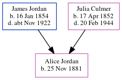

Rosamond Julia Goodban (née Jordan) 1883 - 1967
[ Home ] | [ Calendar ] | [ Surnames Index ] | [ Errors ] | [ Family History ]The child of James Jordan (a horse keeper) and Julia Culmer, Rosamond Jordan, the second cousin twice-removed on the mother's side of Nigel Horne, was born in Faversham, Kent, England on 19 Nov 18831,2,3 and baptised there on 14 Dec 1883. She married Albert Goodban there c. Nov 19054.
During her life, she was living at 2 Mill Place in Faversham on 5 Apr 18915 - less than a mile from her sister Alice Ann Harriet who was living at 2 Mill Place in Faversham; and at 3 Guildcount Lane, Sandwich, Kent, England on 29 Sept 19391.
She died on 27 Nov 1967 in Sittingbourne, Kent, England3.
Parents
- James was born on 16 Jan 1854
- Julia was born on 17 Apr 1852
Citations
- 1939 Register - Findmypast (was the wife of the head of the household)
- England & Wales births 1837-2006 - Findmypast
- England & Wales deaths 1837-2007 - Findmypast
- England & Wales Marriages 1837-2005 - Findmypast
- 1891 England, Wales & Scotland Census - Findmypast (was age 7 and the daughter of the head of the household)
Media
1891 England, Wales & Scotland Census - GBC/1891/0005793049
England & Wales births 1837-2006 - BMD/B/1883/4/AZ/000309/161
England Births & Baptisms 1538-1975 - R_885853345
England & Wales marriages 1837-2005 - BMD/M/1905/4/AZ/000216/211
1939 Register - TNA/R39/1780/1780D/015/25
England & Wales deaths 1837-2007 - BMD/D/1967/4/AZ/000386/069
Family Tree
Map
Generated by ged2site. Last updated on Jul 3, 2024
Known Issues
Listed in the residence for 29 Sep 1939, but spouse Albert Goodban is not